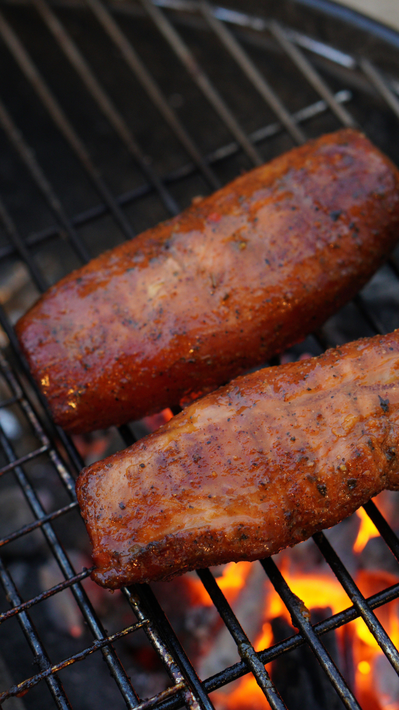

Home
Smoked Pork Butt

Description
We make this smoked pork butt recipe every few weeks because we love pulled
BBQ pork sandwiches. The pork just shreds apart after it's done, and the
smoky flavor is incredible. It's best to brine the meat overnight to help it
retain moisture during smoking, but it's not necessary. Serve the shredded
pork on buns with your favorite sauce. It's an authentic pit barbecue right
in your own house!
Ingredients
- 4 tablespoons packed brown sugar
- 2 tablespoons ground New Mexico chili powder
- 7 pounds fresh pork butt roast
Steps
- Gather all ingredients.
- If desired, soak the pork butt in a brine solution for at least 4 hours
or overnight. There's a recipe for a brine on this site titled 'Basic
Brine for Smoking Meat'. You should do this covered and in the
refrigerator.
- Preheat an outdoor smoker for 200 to 225 degrees F (95 to 110 degrees C).
Place a roasting rack in a drip pan. While grill preheats, in a small bowl,
combine the brown sugar, chili powder and any additional seasonings to your
taste.
- Apply this liberally to the meat and rub it in with your fingers.
- Place a roasting rack in a drip pan and lay the meat on the rack.
- Smoke at 200 to 225°F (95 to 110°C) for 6 to 18 hours, or until internal
pork temperature reaches 145°F (63°C).